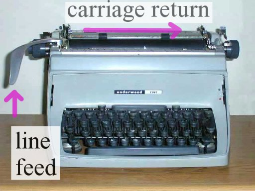

name: heading class: center, middle, inverse --- template: heading # Serial port, Arduino, Processing og Python ## Torgeir Thoresen ## <a href="mailto:torgeir.thoresen@gmail.com">torgeir.thoresen@gmail.com</a> ## <a href="http://twitter.com/torgeir">@torgeir</a> --- # Agenda ## Såvidt om Raspberry PI ## Serial port ## Arduino serial port ## Serial port via Processing ## Serial port via Python ## Gjenbruke kode i Python --- # Såvidt om Raspberry PI ## The Raspberry PI Guy [theraspberrypiguy.com](http://theraspberrypiguy.com) --- # Serial port ## Gammel teknologi ## Alle pcer støtter det ## Serialiserer data ## Bi-directional ## Må velge hastighet (feks 9600 baud, symboler per sekund) ??? - den andre varianten er en parallell port - i motsetning til en parallell port, trenger bare én ledning, men tar 8 gang så lang tid som hvis det var 8 ledninger - sende og motta data - start-bit, før hver byte 0 - så en byte - så en sluttbit - tar en byte med data, og sender de 8 bitene, en og en --- # Koble til serial porten fra Arduino Koble til med 9600 baud (symboler per sekund) ```c void setup() { Serial.begin(9600); } ``` ??? - bits per sekund --- # Hva kan vi sende? ## ASCII <img src="ascii.gif"/> ??? - PCer forstår bare tall - Sende tall, kodet på en måte som kalles ascii - Amerikansk standard for utveksling av tekst mellom maskiner - tall representerer alfabetetet, men også andre symboler --- # Skrive til serial fra Arduino http://arduino.cc/en/reference/serial ```c int i = 0; void loop() { Serial.print("Tall: ") // [84, 97, 108, 108, 58, 32] Serial.print(i); // første gang 48, andre gang 49, osv Serial.println(". Done."); // [46, 32, 68, 111, 110, 101, 46, 13, 10] i = i + 1; if (i == 10) { i = 0; } } ``` ## feks "Tall: 4. Done." ??? - viser hva som egentlig sendes --- # Carriage return + newline  ## \r er 13, \n er 10 http://arduino.cc/en/Serial/Println --- template: heading class: center, middle # The typewriter <iframe width="420" height="315" src="https://www.youtube.com/embed/KgP95q3fnaY?t=49" frameborder="0" allowfullscreen></iframe> --- # Koble til serial porten fra Processing https://www.processing.org/reference/libraries/serial/ ```c import processing.serial.*; Serial port; void setup() { connectToArduino(); } void connectToArduino() { String device = findDevice(); port = new Serial(this, device, 9600); // kast eksisterende data, hvis vi kobler på midt mens arduinoen skriver port.clear(); } ``` -- ```c String findDevice() { for (String device : Serial.list()) { // os x/linux er formatet /dev/cu.usbmodemfd<tall> // på windows er det COM<tall> if (device.indexOf("tty.usbmodem") != -1) { return device; } } throw new RuntimeException("Could not find arduino"); } ``` --- # Lese fra serial porten med Processing ```java void draw() { String data = readData(); if (data.length() > 0) { println("got: " + data); } } ``` -- ```java int newline = 10; // \n String readData() { if (port.available() > 0) { String read = port.readStringUntil(newline); if (read != null) { return read.replace("\r\n", ""); } } return ""; } ``` --- # Bruke serial porten fra Python ## Bibliotek: pyserial http://pyserial.sourceforge.net/ ```bash pip install pyserial ``` eller ```bash easy_install pyserial ``` --- # Koble til og lese serial porten med Python ```python import serial port = serial.Serial("/dev/cu.usbmodemfd13131", 9600); while (True): if (port.inWaiting() > 0): line = port.readline(); line = line.rstrip(); # fjerner \r\n print "got " + line ``` --- # Klasser og objekter i Python ## Klasse (timer.py) ```python import time class Timer: "Checks when amount of time has passed" def __init__(self, seconds): self.seconds = seconds; self.startTime = time.time(); def isDone(self): return time.time() - self.startTime > self.seconds; ``` -- ## Objekt (script.py) ```python from timer import Timer min_timer = Timer(5) ``` --- # Gjenbruke Python-kode ## script.py ```python import serial port = serial.Serial("/dev/cu.usbmodemfd13131", 9600) from timer import Timer def run(): timer = Timer(5) while (True): if (timer.isDone()): print "sending ping" port.write("ping\n") timer = Timer(5) msg = read(); if (msg == 'pong'): print "Oooh! got pong." def read(): if (port.inWaiting() > 0): line = port.readline() line = line.rstrip() # fjerner \r\n return line return "" run(); ``` --- template: heading # Demo ## Arduino + Processing ## Arduino + Python --- template: heading # Takk for meg! ## Torgeir Thoresen ## <a href="mailto:torgeir.thoresen@gmail.com">torgeir.thoresen@gmail.com</a> ## <a href="http://twitter.com/torgeir">@torgeir</a>